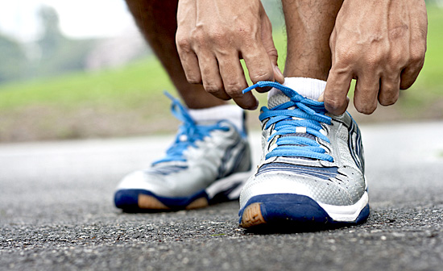

Deportes
Salir a trotar, ¿cómo?

El trote es sin dudas una buena opción si decidimos movernos un poco y mejorar la salud de una forma relativamente sencilla y al alcance de todos: no necesitamos hacer un gasto económico… sólo hace falta que nos hagamos un espacio para ello. Si no contamos con los cuidados de un profesional, debemos tener en cuenta unos puntos básicos a la hora hacerlo:
• Acordate de que el trote no puede ser prescrito arbitrariamente para cualquier persona. Si tenés algún tipo de lesión, sobrepeso o cualquier enfermedad, te recomiendo que solicites los concejos y cuidados de alguien idóneo en el área.
• Si estás inactivo desde hace mucho tiempo, comenzá caminando unos días. Podés ir aumentando la intensidad progresivamente: caminata, caminata con pasos rápidos y luego ir alternando caminata y trote.
• Recordá que antes de llegar al trote tenés que fortalecer toda tu estructura. Esto es porque existe una fase de vuelo y, al hacer contacto con el piso, el impacto a nivel del tobillo es el de 2 a 5 veces tu peso corporal… ¡y a nivel de las rodillas es de 5 a 9 veces!
• Si ya estás trotando, caminá unos minutos para calentar, hacé una elongación general, trotá, y al finalizar podés volver a caminar unos minutos y siempre elongá nuevamente.
• Un buen par de zapatillas es importante. Te recomiendo aquellas con amortiguación en la zona del talón, con suelas flexibles para que el pié pueda moverse lo más libre posible.
• Ponete ropa cómoda y de un material para que tu cuerpo pueda “respirar”, nunca utilices ropa que te haga transpirar de más: ¡al sudar no perdés grasas!
• Llevá reloj, corré por tiempo y no por distancia; y aumentalo progresivamente siempre escuchando a tu cuerpo… no te sobre exijas.
• Respirá controladamente. Puede ser por nariz o por boca, siempre seguí un tiempo, concentrate en ella, es muy importante.
• Hidratate bien antes, durante y después del trote. Llevá una botellita con agua.
• Si tenés la posibilidad, trotá en terrenos blandos como en la plaza. Si podés hacelo por el pasto; y si lo haces por las veredas tené cuidado sobre todo al bajar los cordones, ya que podés lesionarte fácilmente las rodillas.
• Si salís temprano nunca lo hagas en ayunas. Desayuná algo leve por lo menos media hora antes, y cuando volvés hacete un desayuno completo.
• El descanso es importante. Por ejemplo, en la semana trotá 3 días y descansá 4 días, alternados.
• Relajate, aprovechá para despejarte, no lo hagas tensionado. Esto debe ser un placer, no un sufrimiento!
Lo más difícil es empezar, los primeros días seguramente te va a costar salir, pero cuando tu organismo se acostumbre, tu mente y tu cuerpo te van a pedir hacerlo!